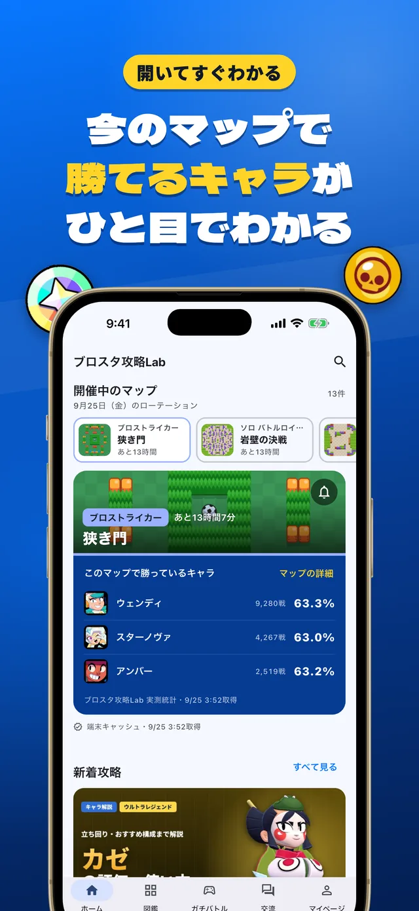
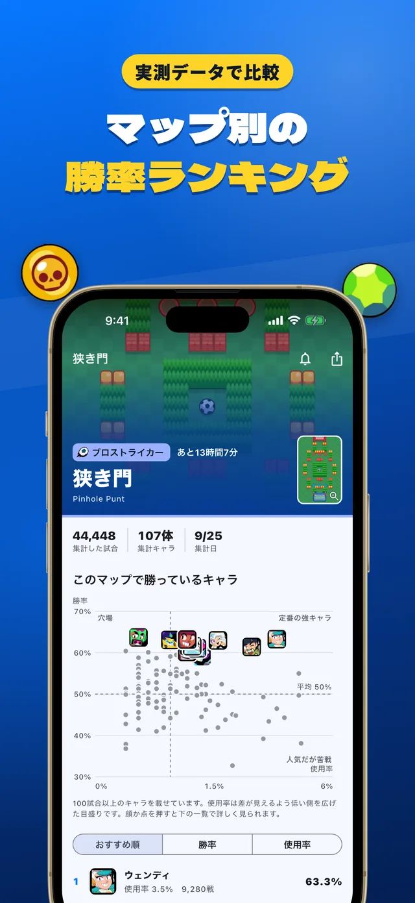

BrawlTech
ブロスタの戦略サポートアプリ
2.0 で全面的に作り直しました。ブロスタ攻略Lab に集まる実際の対戦データから、開催中のマップで勝っているキャラをひと目で表示。マップ別の勝率ランキング、ガチバトルの BAN/PICK 補助、全キャラ図鑑と比較、戦績分析と育成計画まで、ひとつのアプリにまとめています。Flutter で iOS と Android に対応し、データは WordPress の API と Cloud Functions から配信しています。
- Flutter
- Riverpod
- Firebase
- WordPress REST API

